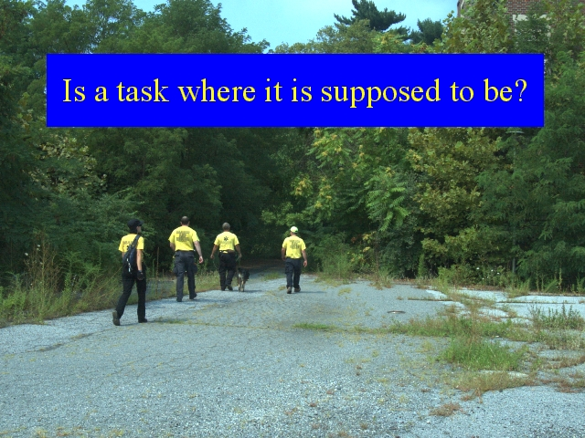

Notes:
SAR teams operate in unfamiliar terrain, under stress, and a task may not always understand its directions and navigate to the area that command was expecting it to search. APRS can provide an added level of assurance to both a task and command that a task is searching a particular area. Like a GPS that records a trail, a tracker carried by a task provides an approximate record of the area covered by that task.